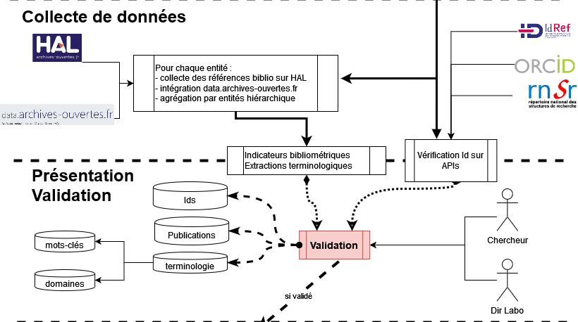
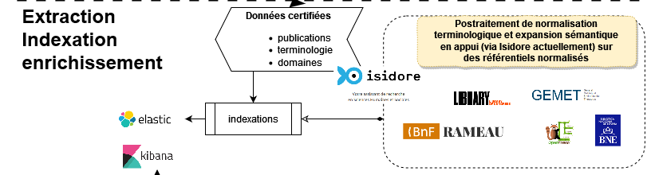
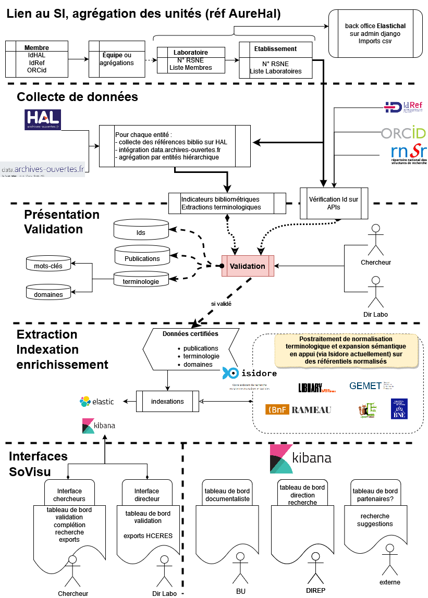

Fonctionnement
SoVisu est un logiciel open source, opérationnel et installable dans un établissement universitaire. SoVisu est issue d’un projet initié en 2019 à l’origine pour cartographier les compétences des membres de l’Université de Toulon. SoViSu est destiné à l’ensemble de la communauté universitaire pour faciliter l’autoarchivage et la gestion individuelle de sa production sur HAL. SoVisu affecte un score de qualité calculé sur la quantité des métadonnées des notices, et extrait automatiquement un lexique propre à chaque document pour l’agréger en un profil informationnel individuel ou collectif. Chacun peut ainsi apprécier la représentation de ses travaux sur les index, et l’adapter pour parfaire sa lisibilité en plus de sa visibilité.
Initialisation et connexion au SI
L’initialisation comprend l’intégration des données chercheurs (issues de ldap) et laboratoires (labHalid) rattachés à une structure (identifiant SIREN). Le laboratoire est décrit par son intitulé, son acronyme, les membres le composant et une liste d’e-mails. Chaque élément est une liste ce qui permet d’associer des dénominations multiples et suivre de fait les évolutions historiques. Les membres sont eux-mêmes décrits par leur nom et prénom.
Avertissement
Les données ldap sont manuellement introduites dans SoVisu mais avec l’authentification CAS il devrait être possible de les puiser directement lors de la première authentification.
Avertissement
le ldapid est utilisé pour désigner le profil utilisateur. Il est prévu de basculer sur une authentification ORCId. A terme, l’utilisation du ORCId en Id interne à SoVisu devrait permettre de s’extraire du SI d’un établissement. Toutefois, les données d’annuaires (chercheur, doctorant, etc. ) sont utiles pour renseigner les exports HCERES.
{kind=link}
Cette étape construit dans Elastic les index suivant :
SIREN-structures # données de structure
SIREN-labHalid-laboratories # données de laboratoire
SIREN-labHalid-laboratories-documents # collection de laboratoire
SIREN-labHalid-researchers # chercheurs du laboratoire
SIREN-labHalid-researchers-ldapid-documents # documents du ldapid de chercheur
Astuce
Le labHalid Non-labo est créé pour les chercheurs non rattachés.
Validations des Id et intégration des notices
Lors de l’authentification le chercheur doit renseigner ses identifiants de chercheur, les créer le cas échéant :
idRef : obligatoire mais non utilisé.
idHal : primordial si faut rien ne marche.
ORCId : optionnel et non utilisé.
Cette étape de validation permet à SoVisu de collecter les notices associées à l’idHal sur Hal. Celles-ci sont alors indexées dans son profil : SIREN-labHalid-researchers-ldapid-documents.
{kind=link}
SoVisu calcule le score de qualité des données des notices sur la base du nombre de métadonnées renseignées.
Les mots-clés auteurs (renseignés par l’éditeur de la notice) sont complétés par un lexique issus de l’extraction automatique sur les titres et résumés (bibliothèque Spacy) : entités nommées et champs nominaux complètent ainsi la représentation des productions.
Enrichissements et synthèses
Avertissement
Les tests d’enrichissement sont encore en cours.
Le principe est de s’appuyer sur les données validées par les chercheurs (mots clés, domaines et vocabulaire issu de ses productions validées) pour enrichir la représentation lexicale (synonymes, hyperonymes, etc.). Isidore a fait parti des premiers tests plutôt concluant mais des travaux d’affinage sont nécessaires.
{kind=link}
Interfaces
Constituées principalement pour intégrer des tableaux de bord Kibana, les formulaires de validation et d’interaction avec les usagers. Actuellement seuls deux profils sont ciblés : les chercheurs et les directeurs de laboratoire. Un moteur d’exploration pour fournir une vue au travers de cartographies interactives des contenus vise aussi les usagers « externe ». Les autres usagers potentiels (documentaliste ou direction de la recherche) disposent de tableaux de bords spécifiques dans Kibana.
{kind=link}